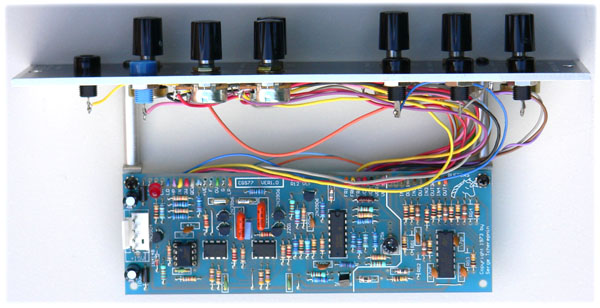
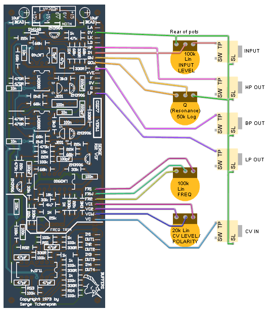
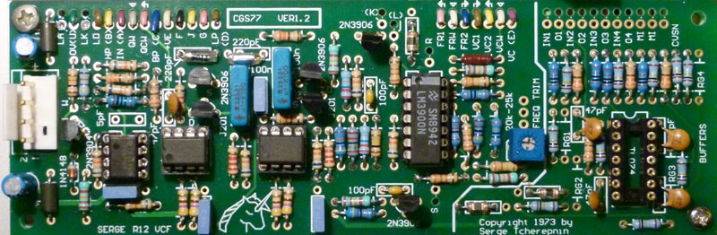
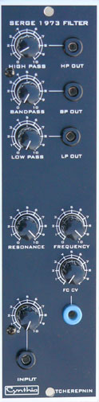
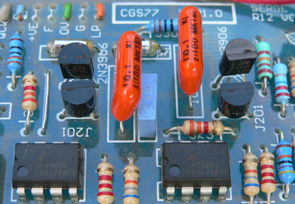

Serge Voltage Controlled Filter
for music synthesizers.

This is a licensed adaptation of the original Serge VCF
Type: State variable, 2 pole, 12dB/oct LP & HP, 6dB slopes on the BP. Does not self oscillate (see modifications below).
A little on how it works.
The circuit consists of a voltage processor, allowing the filter frequency to respond either proportionally or inverse-proportionally to the incoming CV. The output of the voltage processor is then fed to a pair of exponential converters that control the gain of the CA3080 transconuctance amplifiers in the filter core, thus varying the frequency.
Click here for the Schematic
Construction

| The component overlay and basic wiring for the VCF. The pots are viewed from the rear. No components need be installed in the buffer section (below the thick line) if it is not needed.
|

| Version 1.2 of the PCB. The board is double sided, but the circuit remains unchanged. Some lables have been adjusted. Of note: The frequency pot CW and CCW connections are shown as per the original VCF, i.e. backwards to standard convention. I would suggest you swap these wires!
|

Before you start assembly, check the board for etching faults. Look for any shorts between tracks, or open circuits due to over etching. Take this opportunity to sand the edges of the board if needed, removing any splinters or rough edges. (With the boards supplied by me, the edges are already milled, and etching faults are very rare.)
When you are happy with the printed circuit board, construction can proceed as normal, starting with the resistors first, followed by the IC socket if used, then moving onto the taller components.
Take particular care with the orientation of the polarized components such as electrolytics, diodes, transistors and ICs.
When inserting ICs into sockets, take care not to accidentally bend any of the pins under the chip. Also, make sure the notch on the chip is aligned with the notch marked on the PCB overlay.
The holes without pads near the input and output pads are to allow a wire to be fed up from the bottom side, looped over and then soldered to the pad. The slack is then pulled back through the hole, creating an anchor that holds the wire by its insulation, reducing the chance of wire breakage. It is also helpful for a system such as Serge, where wires are traditionally connected from the solder side of the PCB.
See the photo below re mounting the J201 FETs on the VER1.0 PCBs.
Setting up
Adjustments on the vcf board are basic. Set trimmer so that the VCF's center frequency as at an appropriate pitch.
Modifications and notes.
- The resistor specified as 11M was actually a 15M on the original. It was hard to determine due to the condition of the original resistor. None the less, there is no notable audio difference between using a 10M or a 15M in the position. I have seen other values in this position on other instruments. As such, I recommend just using a 10M.
- The bias for the LM3080 OTAs was omitted in some later builds. As such, if you don't have any 22M resistors, simply omit them. Again casual testing was unable to determine any difference in response to them being included or not. The associated 100k and 15k could also be omitted if you omit the 22M resistors.
- If you wish the filter to self oscillate at high Q settings, the 68k resistor between pins 2 and 6 of the single op-amp (LM748 on the PCB) can be reduced to 27k. This 68k is physically between the 11M and the 330R resistors. This will also drop the output levels significantly. To recover the levels, feed the LP, BP and HP outputs through three of the onboard buffers, with 39k resistors used in positions marked RG.
- A TL071 can be substituted for the ancient LM748. If you do this, leave out the 5pF capacitor.
- The resistors marked RG1-4 are for setting the gains of the optional buffers. It is unlikely you will need to install them, and then only if you are using the buffers as gain stages for something other than this filter.
- All parts surrounding the TL074, as indicated by the heavy line marking of the area of the PCB, can be omitted if the buffers are not required.
- 100k linear pots can be used instead of the 20k or 25k pots. The parts list now reflects this.
- Possible use for the buffers include buffering the input and CV input to compensate for their lower-than-usual input impedance, or buffering the outputs after they have been fed though a level pot, as per the panel in the photo.
- A DPDT switch can be added to short points F and G to 0V (J on ver 1.2 PCB). Doing this will switch the filter into low-frequency mode, as per the VCFX (for CV filtering etc.). While the original Serge boards had this function, it is doubtful it was ever brought out to the panel. Some later builds omitted the 100n capacitors, replacing them with links.
- The LD connection can be connected to one of the outputs to give a visible indication of an output signal. The LED, the associated transistor and resistors can be omitted. The LED resistor is marked 1kLR on the later versions of the board, to help identifying it if you need to adjust its value to compensate for an overly bright LED.
- Even though the panel says "Cynthia" on it, it does NOT mean that this is a module she is offering for sale!
- Offsite link to an mp3 example of how this filter sounds.
- PCB info: 2" x 6" with four 3mm mounting holes 0.15" in from the edges.
- Will run on +/- 12 volts or +/-15 volts.
- Please email me if you find any errors.

| On the VER1.0 board, the two FET markings are incorrect for the J201 packages. You need to install these "backwards" with respect to the overlay. This has been corrected for the VER1.1 and later boards.
|
| Part | Quantity |
| Capacitors |
|---|
| 5pF (omit for TL071) | 1 |
| 47pF | 5 |
| 100pF | 2 |
| 220pF (Styrene) | 2 |
| 10n | 4 |
| 100n (monoblock) | 3 |
| 100n MKT or better | 2 |
| 10uF 25V | 2 |
| Resistors |
|---|
| 330R | 7 |
| 470R | 4 |
| 1k | 5 |
| 2k2 | 2 |
| 3k3 | 2 |
| 4k7 | 1 |
| 15k | 1 |
| 18k | 1 |
| 22k | 5 |
| 33k | 3 |
| 47k | 1 |
| 68k | 8 |
| 100k | 11 |
| 330k | 2 |
| 470k | 2 |
| 1M | 2 |
| 3M3 | 1 |
| 11M | 1 |
| 22M | 2 |
| RG1-4 see text | 4 |
| 22k (25k) trimmer | 1 |
| 50k log pot | 1 |
| 100k lin pot | 3 |
| Semi's |
|---|
| LED | 1 |
| 1N4148 | 1 |
| 2N3904 | 1 |
| 2N3906 | 4 |
| J201 | 2 |
| LM748 or TL071 | 1 |
| CA3080 or LM3080 | 2 |
| LM3900 | 1 |
| TL074 | 1 |
| Misc. |
|---|
| Ferrite Bead | 2 |
| 0.156 4 pin connector | 1 |
| cgs77 PCB | 1 |
|
|
Parts list
This is a guide only. Parts needed will vary with individual constructor's needs.
Classic Serge style knobs can be purchased from
Small Bear Electronics LLC
phenolic clone of Davies 1900H
ABS clone of Davies 1900H
Colored ABS clones of Davies 1900H
If anyone is interested in buying these boards, please check the PCBs for Sale page to see if I have any in stock.
Can't find the parts? See the parts FAQ to see if I've already answered the question. Also see the CGS Synth discussion group.
Article, art & design copyright 2006 by Ken Stone
Modular Synth Home Disclaimer
|